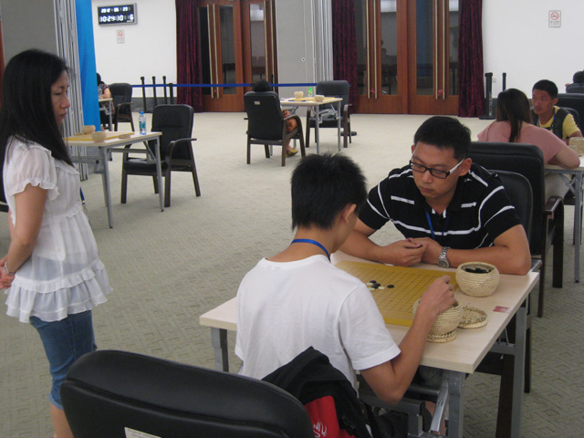
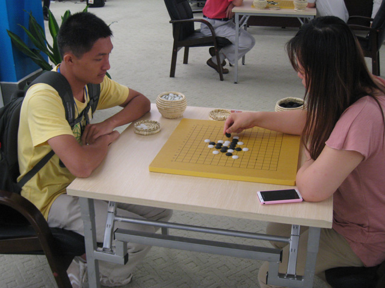
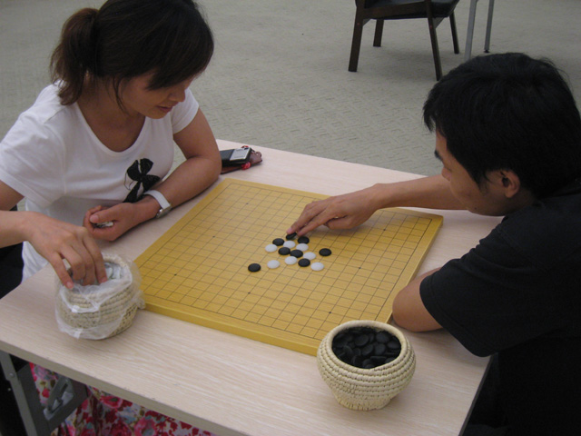
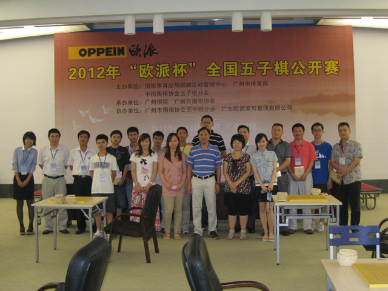
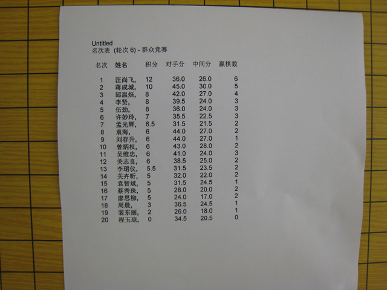

2012年“欧派杯”全国五子棋公开赛照片5群众竞赛活动
首页
五子棋新闻
#1 2012年“欧派杯”全国五子棋公开赛照片5群众竞赛活动 作者：无尽 发表时间：2012-6-26 22:13:37

本次群众竞赛活动第一名、06年广州高校赛冠军汪尚飞（右）与寒月“表哥”、第二名蒋成城（左）激战中

象棋特大吕钦夫人许妙玲（白衣观战者）




B区比赛大厅，群众竞赛活动赛场


前八名，围棋、象棋、国际象棋、桥牌高手均参与了本次比赛

合照，广州棋院书记（中间蓝粉间衣服）

［此帖子已被 无尽 在 2012-6-26 22:22:40 编辑过］
#2 Re:2012年“欧派杯”全国五子棋公开赛照片5群众竞赛活动 作者：tears 发表时间：2012-6-26 22:25:02
话说，表哥带引号是啥意思？ ［ 圊籽 于 2012-6-27 6:51:34 时花20金币送鲜花一朵］
#3 Re:2012年“欧派杯”全国五子棋公开赛照片5群众竞赛活动 作者：飞飞 发表时间：2012-6-26 23:08:08
话说，tear+s 什么意思？
#4 Re:2012年“欧派杯”全国五子棋公开赛照片5群众竞赛活动 作者：吉小鼠 发表时间：2012-6-27 0:06:00
 我看到了一个“玉琼”。。。。。。。
我看到了一个“玉琼”。。。。。。。
#5 Re:2012年“欧派杯”全国五子棋公开赛照片5群众竞赛活动 作者：彦彦柒 发表时间：2012-6-27 14:13:15
我看到谁夫人徐妙玲还是第7名